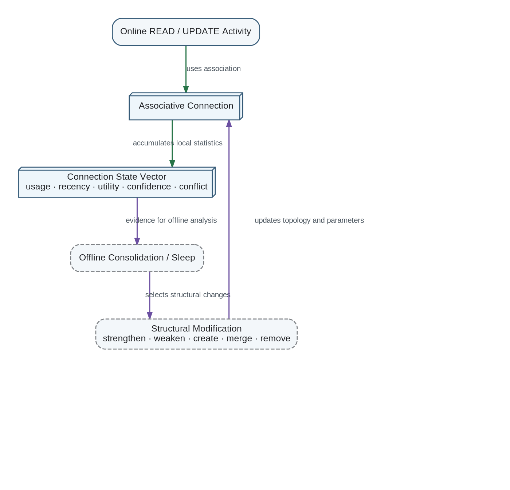

Connection State Vectors and Sleep-Time Structural Learning
Ordinary online operation updates connection-state statistics without immediately changing memory topology. This separates inexpensive functional learning from expensive structural learning.
Connection-State Evidence and Sleep-Time Structural Learning

Online activity accumulates local statistics in each associative connection. Offline Consolidation and Sleep later use that evidence to modify topology, connection strength, routing, merging, creation, or removal.
Online phase: accumulate statistics and permit small reversible parameter updates.
Sleep phase: compare evidence across many connections and episodes.
Structural phase: strengthen, weaken, create, merge, reroute, or remove connections.
Preserve provenance, rollback information, and uncertainty for every destructive change.